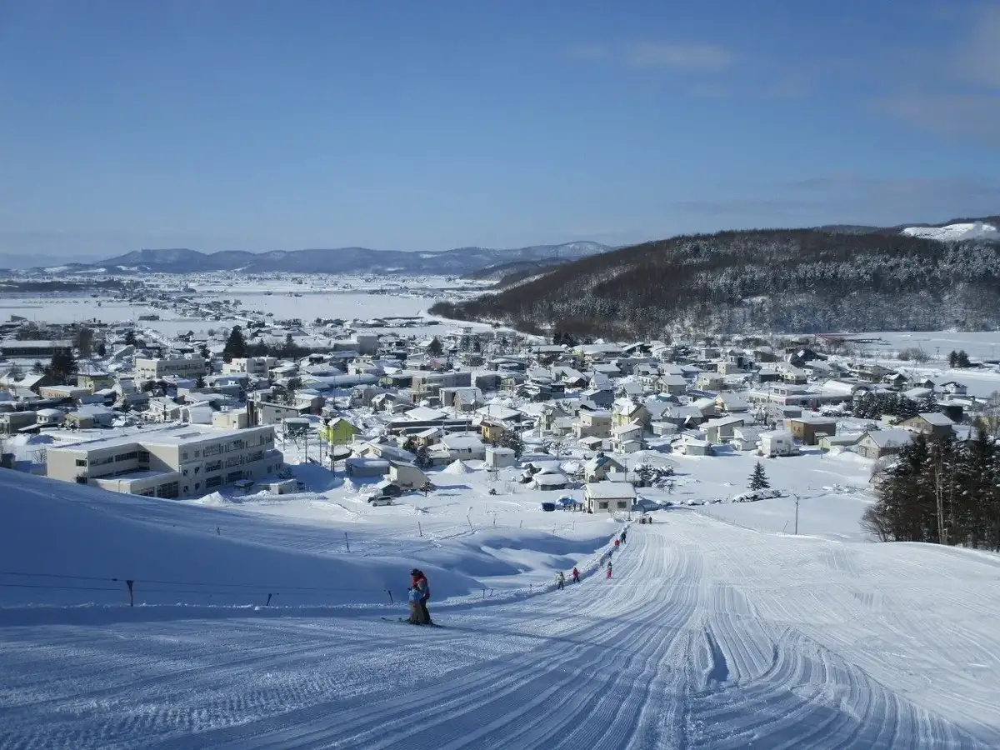
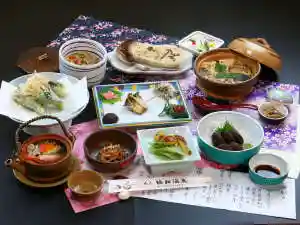
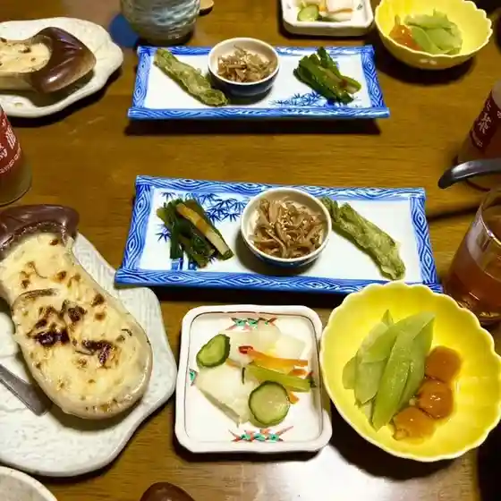
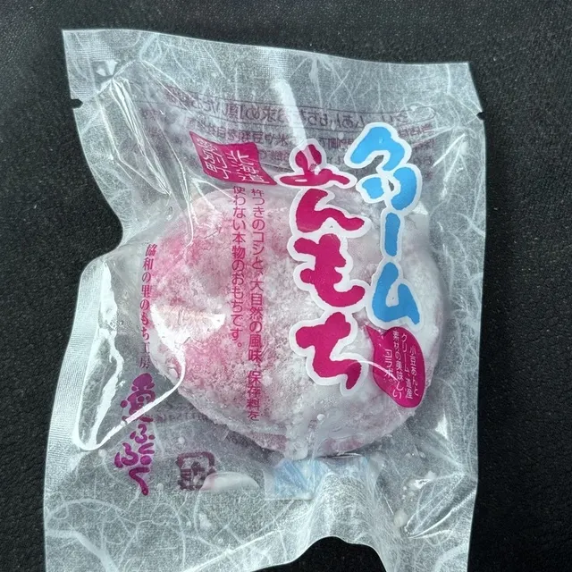
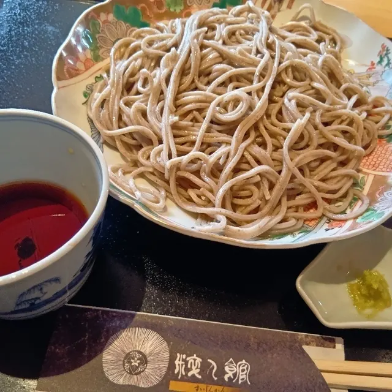
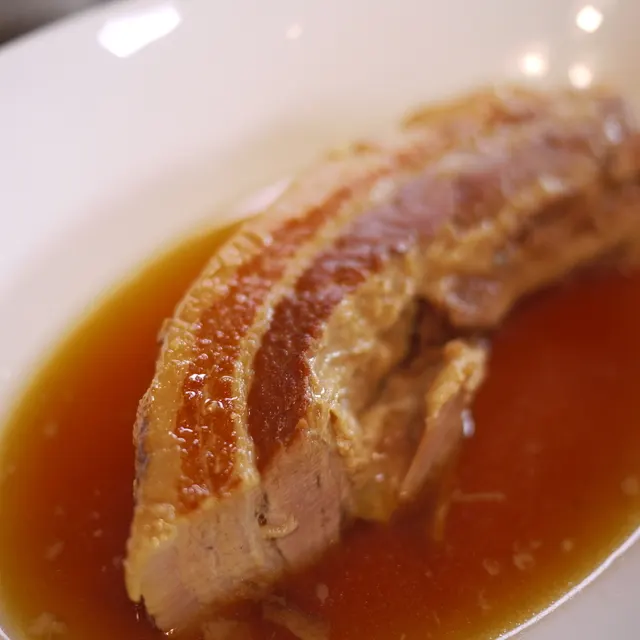
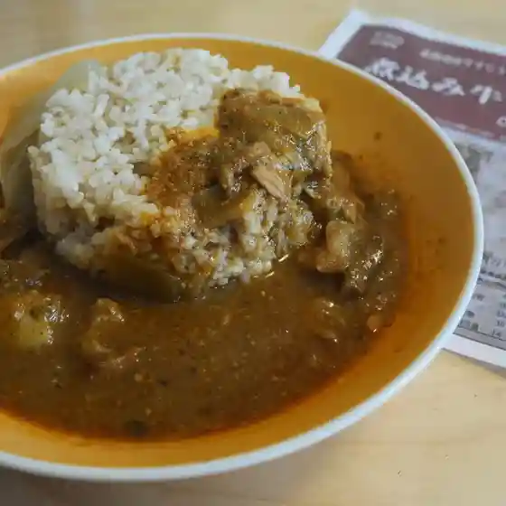
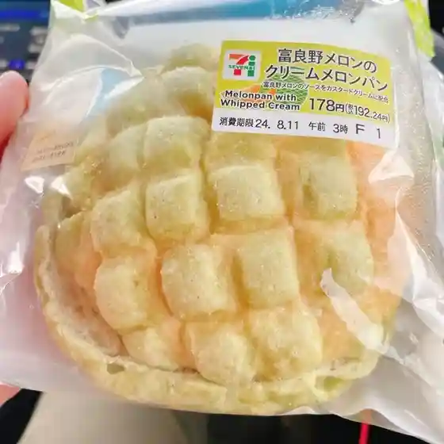
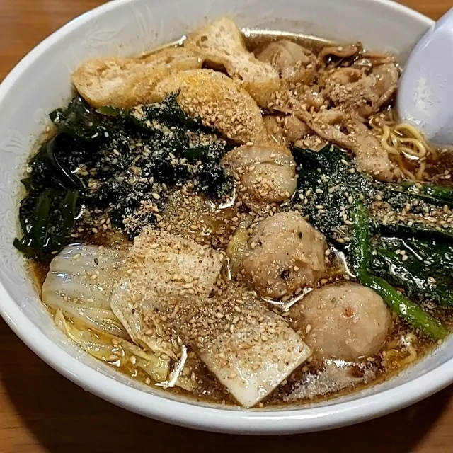
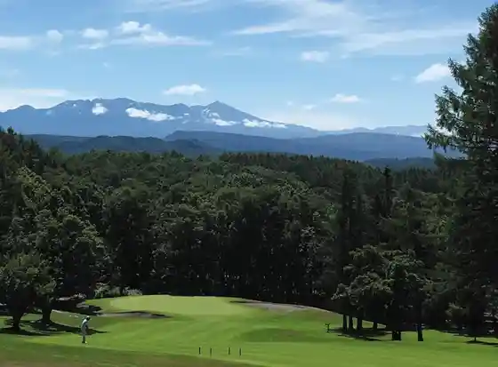

Aibetsu
Aibetsu · Hokkaido
Aibetsu
Highlighted on the Hokkaido map.

Stay
特産きのこ料理と天然温泉の宿 湯元 協和温泉

Tokusan Kinoko Ryouri To Tennen Onsen No Yado Yumoto Kyouwa Onsen
Dining
協和温泉

Kyouwa Onsen
協和の里のもち工房 愛ふくふく

Kyouwa No Sato Nomochi Koubou Ai Fukufuku
粋人館

Suijin Kan
愛別食堂おちこち

Aibetsu Shokudou Ochikochi
きのポックル

Kino Pokkuru
セブンイレブン 愛別町店

Sebun'Irebun Aibetsu Machi Mise
ちゃんこ鍋 弁慶

Chanko Nabe Benkei
紅船寿司

Kurenai Fune Sushi
森のごはんや
Mori Nogohanya
ごはん屋ニコイチキッチン
Gohan Ya Nikoichikitchin
旭川国際カントリークラブ
Asahikawa Kokusai Kantoriikurabu
セイコーマート 愛別店
Seikoomaato Aibetsu Mise
山の食房
Yama No Shoku Bou
蓬来亭
Yomogi Rai Tei
Sights
Aibetsu Famirii Ski Area
Aibetsu Famirii Ski Area
Asahikawa Kokusai Kantorii Club

Asahikawa Kokusai Kantorii Club